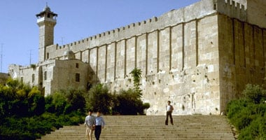

انا اسيل الحوساني عمري 25سنة خريجة هندسة حاسوب من هواياتي التنس الطاولة والطبخ ...الخ
إنها مدينة الخليل ذات التاريخ القديم الممتد لألاف السنين، تلك المدينة التي تأصل في أهلها كرم إبراهيم الخليل، وحق لهم ذلك وهم يجاورون جسده الشريف منذ آلاف السنين. ولذلك أصبحت تُعرف بالمدينة التي لا ينام بها جائع. وتكية سيدنا إبراهيم خير شاهد، حيث أن الطعام المجاني لم يتوقف في هذه التكية منذ أمد بعيد.